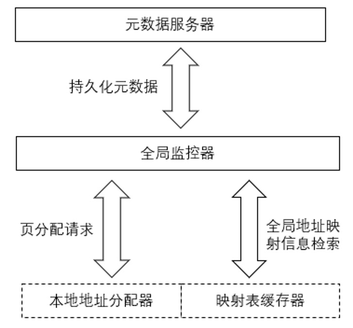
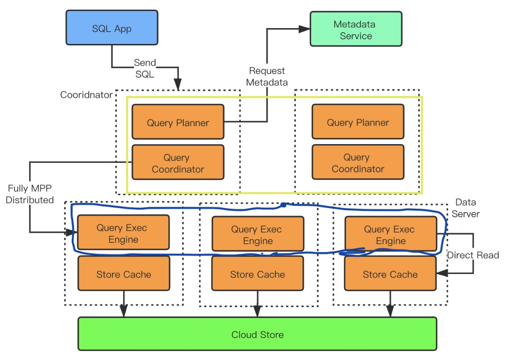
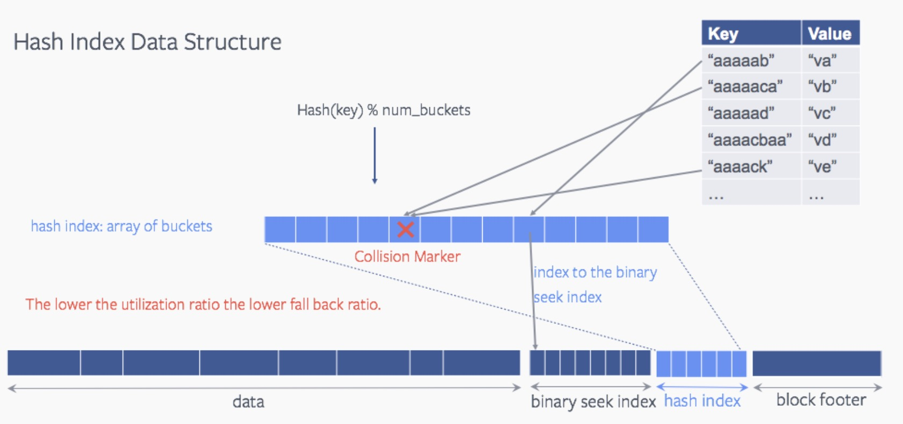
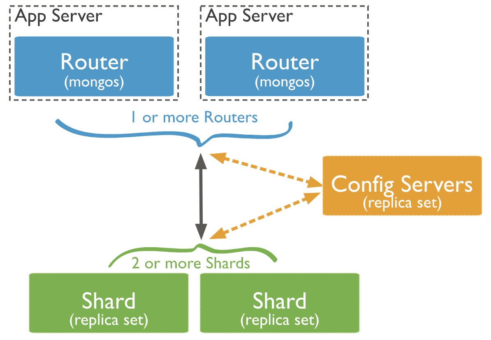
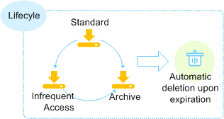

Jiaqi Wang
Now I am a full-time research assistant at the Chinese University of Hong Kong,Shenzhen(CUHKSZ), focusing on research in the direction of micro medical robotics. In the future, I would like to get more opportunities about medical robotics.
Previously, I obtained my B.S. in Mechanical Design Manufacture and Automation at XIDIAN University(XDU) in 2022, advised by Professor Pei Wang.
Please find my CV here.
Research Interest
Currently I am working on automated operations in assisted reproductive technology(IVF), such as automated finding of sperm under the microscope, automated splitting of blastocysts, etc.
In the future I would like to experiment with more deep learning algorithms with healthcare and the design of surgical robotics.
What's
New
[Dec 2022] Estimating End-Effector 3D Position using a Single Monocular Microscopic Image for Robotic Micromanipulation is accepted to ROBIO 2022!
[Nov 2022] Estimating Z-position of Motile Cells for Robotic Cell Manipulation is accepted to IEEE CBS 2022!
[Nov 2022] Machine Learning-based Depth Prediction of End-Effector for 3D Robotic Micromanipulation is accepted to IEEE CBS 2022!
[Oct 2022] I obtained the Video Presentation Award-Second Place at the American Society for Reproductive Medicine's 78th ASRM Scientific Congress & Expo!
This is the most prestigious reproductive medicine conference in the United States! And the abstracts are published in FERTILITY AND STERILITY, the top journal in reproductive medicine.
[Jun 2022] I obtained my B.S. in Mechanical Design Manufacture and Automatio at XIDIAN University(XDU).
Research
Experience
Below are my research experience and industry projects.
-

Testing The Reproducibility and Effectiveness of Deep Learning Models among Clinics: Deep Learning-Based Sperm Counting as a Pilot Study
Under review NPJ digital medicine
Jiaqi Wang, Aojun jiang, Wenyuan Chen et al. Task: Enhancing deep learning models for sperm detection and counting in in vitro fertilization (IVF) procedures.
What: Conducting a multicentric clinical validation to address the challenge of model reproducibility across varied clinical settings in IVF.
Benefits: Improved clinical outcomes and enhanced reliability in IVF procedures.
How: By examining the impact of imaging factors, enriching the training dataset with diverse imaging conditions, and ensuring a balanced representation of relevant objects, the study demonstrates the importance of dataset diversity and comprehensive feature sets for consistent model performance. This approach enhances model reproducibility and clinical reliability in IVF laboratories. -

Identifying Viability of Immotile Sperm at One Glance: Sperm Viability Classifier Powered by Deep Learning
Fertility and Sterility
Aojun Jiang, Jiaqi Wang, Huan Zhao, Zhuoran Zhang, Yu Sun What: Use persistent memory as SSD cache.
Motivation: Using persistent memory as SSD cache can reduce the data persistence overhead, but the existing cache construction method does not consider the workload characteristics and cannot give full play to the hardware performance.
How: Build adaptive cache management (AFCM) combining pages and cache lines, which reduces the data write amplification of coarse-grained cache management (SCCM), and eliminates the cache index overhead caused by the fine-grained cache management (SFCM) with the granularity of the cache line. Designed copy-on-write (TCOW) mechanism to ensure the crash consistency of NVMM cache space and file system mirroring.
Benefits: The performance of AFCM is 83% higher than that of SCCM, and the write operation to SSD is reduced by 63%. -

A global address space management method for distributed persistent memory
Patent No: CN111241011A.
Jiwu Shu, Youmin Chen, Qing Wang, Pei Chen, Youyou Lu What: Adress space management for distributed persistent memory.
Motivation: It is essential to build a distributed persistent memory allocator with high availability, high performance and crash consistency, but the existing persistent memory allocator cannot satisfy the above characteristics at the same time.
How: Use a centralized monitor to manage the node and address mapping information in the cluster. Use the raft protocol to ensure the high availability of the monitor. Use the primary backup protocol to ensure the high availability of the data. Build a thread-isolated address mapping table and batch processing strategy to improve access to metadata server performance. Use the state machine mechanism inside the local allocator, and use the two-phase commit method to ensure the atomicity of address allocation. Design a lock-free data structure for address allocation -
Identifying Viability of Immotile Sperm at One Glance: Sperm Viability Classifier Powered by Deep Learning
Patent No: CN111858418A.
Youyou Lu, Jiwu Shu, Youmin Chen, Pei Chen, Jun Xu, Peng Lin. What: Deliver scalable performance on RC RDMA.
Motivation: RDMA suffers performance collapse when transferring data to an increasing number of clients on reliable connection because of resource contention in the CPU cache.
How: Deliver scalable performance based on RC RDMA. It achieves so by grouping and rating the network connections, so as to balance the saturation and thrashing of the cache space. Introduced a background thread pool for efficient data storage and enhanced RDMA with strategic scheduling. Constructed a QP-isolated RDMA communication method while utilizing GPUDirect for inter-node communication, reducing message copying overhead. Developed a background thread pool for parallel data persistence and improved RDMA scalability through hardware resource reuse and efficient scheduling. Achieved a write bandwidth 18\% higher than the baseline system.
-

Introduce vector engine of ClickHouse into MySQL
Research Intern. Jan 2022 - April 2022
ByteDance Corp · Beijing What: Designed and implemented a c++ source code MysqlExecutor by imitating ScanExecutor of ClickHouse to support ByteNDB storage. Developed a presentation of the new schema and drafted a list of C++ classes that needs to be modified to support ByteNDB storage.
-

Optimization of Local Storage Read Performance and Reliability for Cloud Storage Metadata
Senior Software Engineer. May 2022 - Sep 2022
Huawei Cloud Corp · Beijing What: Improving point-lookup using data block hash index. . Do some basic consistency checks to LSM-tree
Benefits: The CPU utilization of one of the main functions in the point lookup code path, DataBlockIter::Seek(), seek is reduced by 21.8% and the overall throughput is increased by 10% at an overhead of 4.6% more space. . Do some basic consistency checks to LSM-tree
-

Scalability and Reliability Optimization of Cloud Storage Metadata Based on MongoDB
Senior Software Engineer. Oct 2022 - June 2023
Huawei Cloud Corp · Beijing What:1) Reliable routing point lookup strategy based on MongoDB, reducing cloud storage metadata access failure duration from 30 minutes to 30 seconds. 2) MongoDB-based route scalability optimization based on mongoDB, eliminating invalid routes, optimizing lock contention, and reducing access latency from 10 seconds to 0.6 milliseconds, a reduction of 2 orders of magnitude 3) In-place assign based on MongoDB chunk, reducing blast radius, improving chunk takeover failure SLA from 96% to 99.99%.
-

Building a Columnar Analytical Engine Based on Object Storage LifeCycle Service
Senior Software Engineer. July 2023 - Present
Huawei Cloud Corp · Beijing What: Designed and implemented a Java source code MergeEngine focusing on object metadata and version management, which can process tasks based on job style. It Eliminated the secondary index for Object Life cycle, in order to improve object storage scalability. Meanwhile, it reduced the cycle of AP update operations from 1 day to 15 minutes. Developed a presentation of the new architecture and drafted a list of Java features that were not yet properly supported by the existing source codes.
Education
Experience
By reserved by time order
Tsinghua University
2018.09 - 2022.01 Advisor: Prof. Jiwu Shu & Prof. Youyou LuI had great experience working with Prof. Jiwu Shu, and Prof. Youyou Lu. This experience strengthens my problem-solving and communication skills and broadens my research horizons.
Central South University
2014.09-2018.07 Advisor: Prof. Weiping WangI am lucky to follow Weiping who encourage me to go for professional competence.
Services
[2022 - 2023] Lecturer, Tsinghua University Student Career Development Association Student Tutor Group.
[2021 - present] Member, Morning Jogging Team of Tsinghua University.
[2021 - 2023] Member, Bodybuilding Team of Tsinghua University.
[2021] Guest speaker, Tsinghua University Computer Science Department "Future of Computing" Phd and Master's Forum.
Awards
🏆[2018] Outstanding Undergraduate Thesis Award(Top 2%)(TODO:加个pdf链接) of CSU.
🏆[2018] Outstanding Graduate(Top 0.1%) of Hunan Province & CSU.
🏆[2017] Second-class Scholarship(Top 5%) of CSU.
🏆[2017] Excellent Student(Top 1%) CSU.
🏆[2016] National Scholarship(Top 0.2% Nationwide), China.
🏆[2016] First-class Scholarship(Top 1%) of CSU.
🏆[2016] Qu Yuan Scholarship(Top 0.1%) of CSU.
🏆[2016] Excellent Student Cadre(Top 2%) CSU.
🏆[2016] Honorable Mention of the International Mathematical Contest in Modeling(MCM).
🏆[2016] Second Prize of University Students' Energy Conservation and Emission Reduction Competition of China(Top 5% Nationwide).
🏆[2016] Second Prize of Information Security Competition of CSU.
🏆[2016] Third Prize of Programming Competition of CSU.
🏆[2016] First Prize of Transportation Science and Technology Competition of CSU.
🏆[2016] First Prize of Energy Saving and Emission Reduction Competition of CSU.
🏆[2015] National Encouragement Scholarship(Top 5%), China.
🏆[2015] Second-class Scholarship(Top 5%) of CSU.
🏆[2015] Chang Wei Scholarship(Top 1%) of CSU.
🏆[2015] Excellent Student Cadre(Top 2%) CSU.
🏆[2015] Third Prize of the Chinese Mathematical Contest in Modeling(MCM).
Miscellaneous
I like running long distances.
I am learning to ski.